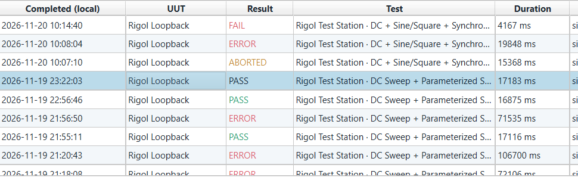

Chapter 14 — Reports, measurements and history

Reports turn a working test script into a reproducible process. A useful run record answers: what was tested, when, by whom, with which procedure, what values were measured, which limits were applied, and how the run finished.
Choose the right operator widget
The Test Sequence / Progress widget shows step states; Measurement Table shows individual named measurements and verdicts; Event Log shows execution messages; Measurement Result provides a compact large display. A results-oriented Panel can show a short dashboard without duplicating all native report state in custom JavaScript arrays.
Structured results become rows
A callback result such as {frequencyHz:999.8, vpp:1.001, shape:0.354} may produce three independent numeric checks. The result object is data; the definition supplies labels, units and limits. Give names to measurements that are stable enough to compare across runs, rather than relying on their position in an array.
The Results Browser
WFScript can browse archived runs, search metadata, inspect per-step details, and export JSON or CSV. Files created by this native reporting mechanism are distinct from arbitrary FileIO exports. Both can be useful: a formal report captures the verdict, while a separate waveform file can preserve the raw evidence.
Data provenance and simulations
The Results Browser screenshot includes a field showing simulation. That field is not sufficient proof that every external TCP instrument operation was simulated. When physical SCPI instruments are involved, record their actual *IDN? identities or serial information in run metadata where the application supports it, and verify that the report's mode label isn't inherited from the unrelated native hardware context.
Repeatability before convenience
Do not change acceptance limits just to obtain a green report. Prefer a reproducible test definition, a meaningful version identifier and an explanation of environmental conditions. When a measured result fails, preserve the failure and its raw or diagnostic evidence instead of silently rerunning until it passes.